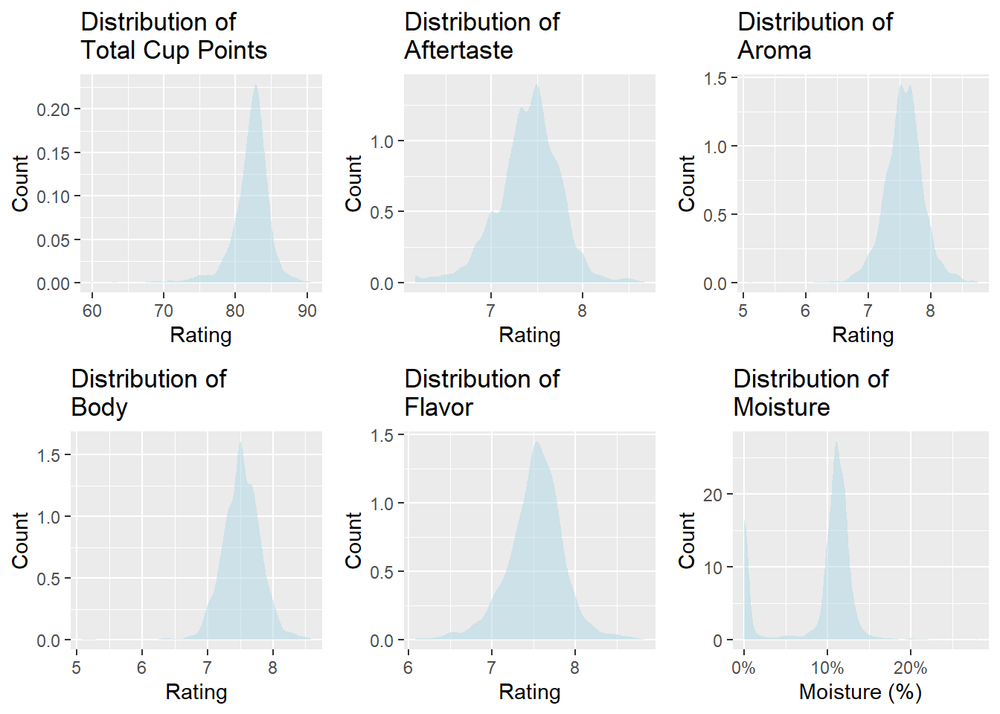
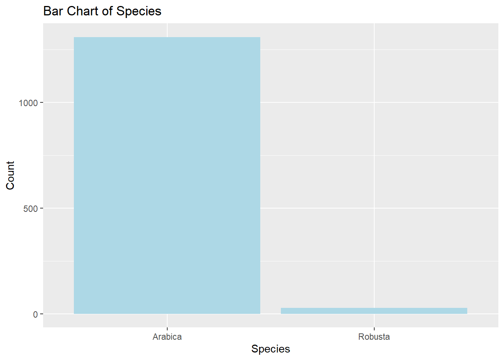
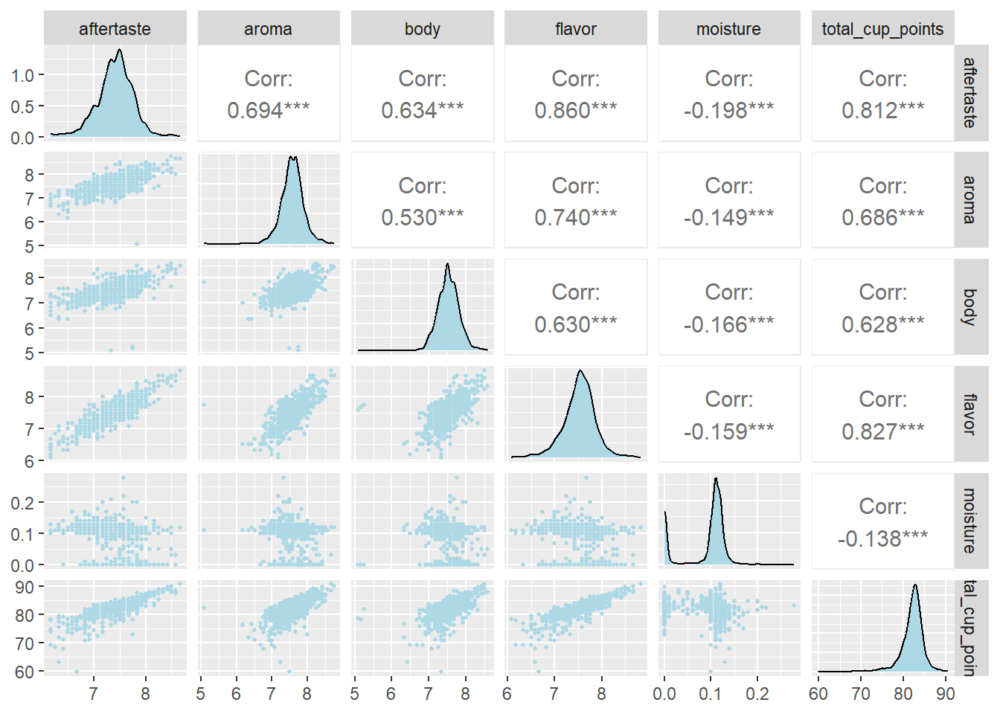
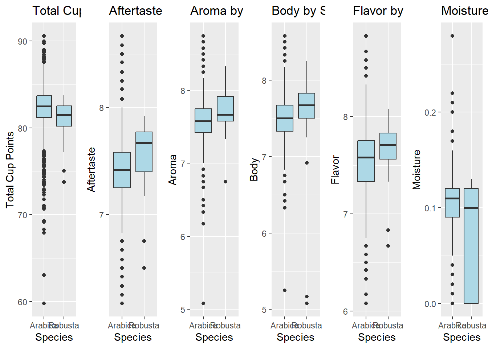

This study aims to identify the most significant factors contributing to total cup points, a standardized coffee quality rating developed by the Coffee Quality Institute. Specifically, we investigate whether attributes such as flavor or aroma strongly influence overall ratings, and whether certain coffee species consistently receive higher evaluations than others. The analysis is based on a dataset of 1,340 digitized coffee reviews collected by James LeDoux in January 2018 through web scraping the publicly available Coffee Quality Database on Github. The “coffee_ratings.csv” data set contains ratings of different coffee beans from various locations and species. All beans were professionally rated on an overall 0 to 100 scale (total_cup_points) and on various factors such as aroma, sweetness, flavor, etc. While the database is continuously updated, this dataset represents a static snapshot from January 2018 and does not include data collected afterward. Our dataset includes coffee beans sourced globally, allowing us to draw generalizable conclusions about the factors that influence overall coffee quality. These insights can guide producers in optimizing desirable traits and support consumers in making informed, quality-based purchasing decisions.
Variable Descriptions
Our response variable is total cup points (total_cup_points), which is an overall rating of the coffee beans, and it goes from a scale of 0 (worst) to 100 (best) points.
The six total explanatory variables used in this study include five quantitative variables (aftertaste, aroma, body, flavor, moisture) and one categorical variable (species):
Aftertaste (rated on a scale of 0 to 10, with 0 being the worst and 10 being the best) measures how long the coffee’s flavor lingers after swallowing, affecting overall experience.
Aroma (rated on a scale of 0 to 10, with 0 being the worst and 10 being the best) is the smell of the brewed coffee, which is crucial for consumer perception and enjoyment.
Body (rated on a scale of 0 to 10, with 0 being the worst and 10 being the best) describes the texture and mouthfeel of coffee, including oiliness and weight.
Flavor (rated on a scale of 0 to 10, with 0 being the worst and 10 being the best) is a key factor in overall quality, rating the intensity and pleasantness of taste.
Moisture (measured as a percentage of the total weight of the sample) describes the moisture content of beans, which can impact freshness and roasting quality.
Species can be either Arabica or Robusta. Arabica is often associated with higher quality and more complex flavors, while Robusta tends to be stronger and more bitter.
Univariate Analyses
One observation seemed to be an error since it was rated 0 in every quantitative variable, while the second-lowest-ranked bean scored 59.83 cup points and had ratings for aftertaste, aroma, body, and flavor between 6 to 8. We filtered the data set to remove the outlier.


total_cup_points aftertaste aroma body
Min. :59.83 Min. :6.170 Min. :5.080 Min. :5.080
1st Qu.:81.10 1st Qu.:7.250 1st Qu.:7.420 1st Qu.:7.330
Median :82.50 Median :7.420 Median :7.580 Median :7.500
Mean :82.15 Mean :7.407 Mean :7.572 Mean :7.523
3rd Qu.:83.67 3rd Qu.:7.580 3rd Qu.:7.750 3rd Qu.:7.670
Max. :90.58 Max. :8.670 Max. :8.750 Max. :8.580
flavor moisture species
Min. :6.080 Min. :0.00000 Length:1338
1st Qu.:7.330 1st Qu.:0.09000 Class :character
Median :7.580 Median :0.11000 Mode :character
Mean :7.526 Mean :0.08836
3rd Qu.:7.750 3rd Qu.:0.12000
Max. :8.830 Max. :0.28000
We will create a ‘ggpairs’ plot to compare each of the explanatory variables (aftertaste, aroma, body, flavor, moisture, species) to the predictor variable (total_cup_points) as well as to each other. This will generate scatterplots and correlation coefficients for every combination of variables. First, we will look at possible relationships between the explanatory variables and the predictor variable (total_cup_points), through scatterplots in the ggpairs plot. This is to ensure that our data meets the conditions for modeling and inference. Next, in the ggpairs plot, we will look at the correlation coefficients between each explanatory variable and the predictor variable to see which has the strongest correlation with our predictor variable.
We will also use this same ggpairs plot to observe the relationship among each of the explanatory variables with each other. If there are any explanatory variables that seem to have a high correlation with other explanatory variables, there might be issues of multicollinearity. In that case, we would use the variance inflation factor (VIF) to determine which of the correlated explanatory variables to keep, and which to discard.
quant_vars <- coffee_data |>select(aftertaste, aroma, body, flavor, moisture, total_cup_points)# Create a correlation matrixcor_matrix <-cor(quant_vars, use ="complete.obs")print(cor_matrix)
# Another matrixggpairs( quant_vars,lower =list(continuous =wrap("points", color ="lightblue", size =0.8)),diag =list(continuous =wrap("densityDiag", fill ="lightblue")),upper =list(continuous =wrap("cor", size =4)))

# Create boxplots of each quantitative variable by speciesp1 <-gf_boxplot(total_cup_points ~ species, data = coffee_data, fill ="lightblue") %>%gf_labs(title ="Total Cup Points by Species", x ="Species", y ="Total Cup Points")p2 <-gf_boxplot(aftertaste ~ species, data = coffee_data, fill ="lightblue") %>%gf_labs(title ="Aftertaste by Species", x ="Species", y ="Aftertaste")p3 <-gf_boxplot(aroma ~ species, data = coffee_data, fill ="lightblue") %>%gf_labs(title ="Aroma by Species", x ="Species", y ="Aroma")p4 <-gf_boxplot(body ~ species, data = coffee_data, fill ="lightblue") %>%gf_labs(title ="Body by Species", x ="Species", y ="Body")p5 <-gf_boxplot(flavor ~ species, data = coffee_data, fill ="lightblue") %>%gf_labs(title ="Flavor by Species", x ="Species", y ="Flavor")p6 <-gf_boxplot(moisture ~ species, data = coffee_data, fill ="lightblue") %>%gf_labs(title ="Moisture by Species", x ="Species", y ="Moisture")# Arrange them in a gridgrid.arrange(p1, p2, p3, p4, p5, p6, ncol =6)

# Run t-tests comparing each variable across speciest1 <-t.test(total_cup_points ~ species, data = coffee_data)t2 <-t.test(aftertaste ~ species, data = coffee_data)t3 <-t.test(aroma ~ species, data = coffee_data)t4 <-t.test(body ~ species, data = coffee_data)t5 <-t.test(flavor ~ species, data = coffee_data)t6 <-t.test(moisture ~ species, data = coffee_data)# Print resultst1
Welch Two Sample t-test
data: total_cup_points by species
t = 2.8028, df = 28.415, p-value = 0.009028
alternative hypothesis: true difference in means between group Arabica and group Robusta is not equal to 0
95 percent confidence interval:
0.353131 2.266233
sample estimates:
mean in group Arabica mean in group Robusta
82.17861 80.86893
t2
Welch Two Sample t-test
data: aftertaste by species
t = -2.3885, df = 28.218, p-value = 0.02384
alternative hypothesis: true difference in means between group Arabica and group Robusta is not equal to 0
95 percent confidence interval:
-0.29029738 -0.02230132
sample estimates:
mean in group Arabica mean in group Robusta
7.403344 7.559643
t3
Welch Two Sample t-test
data: aroma by species
t = -2.3466, df = 28.328, p-value = 0.02616
alternative hypothesis: true difference in means between group Arabica and group Robusta is not equal to 0
95 percent confidence interval:
-0.24889014 -0.01694955
sample estimates:
mean in group Arabica mean in group Robusta
7.56958 7.70250
t4
Welch Two Sample t-test
data: body by species
t = 0.1215, df = 27.189, p-value = 0.9042
alternative hypothesis: true difference in means between group Arabica and group Robusta is not equal to 0
95 percent confidence interval:
-0.2649036 0.2982634
sample estimates:
mean in group Arabica mean in group Robusta
7.523466 7.506786
t5
Welch Two Sample t-test
data: flavor by species
t = -1.8382, df = 28.483, p-value = 0.07649
alternative hypothesis: true difference in means between group Arabica and group Robusta is not equal to 0
95 percent confidence interval:
-0.22594519 0.01213494
sample estimates:
mean in group Arabica mean in group Robusta
7.523809 7.630714
t6
Welch Two Sample t-test
data: moisture by species
t = 2.0782, df = 27.782, p-value = 0.04705
alternative hypothesis: true difference in means between group Arabica and group Robusta is not equal to 0
95 percent confidence interval:
0.000323145 0.045927673
sample estimates:
mean in group Arabica mean in group Robusta
0.08883969 0.06571429
Step 3: Building Models
After analyzing the correlation matrix and VIF values, we will remove explanatory variables that are collinear with each other (with VIFs higher than 5) and prioritize explanatory variables with the highest correlation to total_cup_points.
If we still have many variables to select from, we will use the best subset automated variable selection method to choose a model that balances fit (best-adjusted R^2 and lowest Mallows’ Cp) with parsimony (simple model). We will also keep in mind to only include significant variables, but the best subset AV selection should take care of this.
We will make a scatter plot with interaction allowed for each selected explanatory variable vs. total_cup_points, making sure to color the points and regression line by species, to check for linearity and interaction. If the interaction term is significant, then we will include the interaction term for the explanatory variable being observed and the species of the coffee. We will check conditions of equal variance and normality of errors using residual plots and QQ plots, respectively.
Finally, with our list of explanatory variables that pass the conditions and significant interactions, we will create our final multiple linear regression.
Best subsets
library(leaps)
Warning: package 'leaps' was built under R version 4.4.3
subset_model <-lm(total_cup_points ~ aftertaste + body + flavor + species, data = coffee_data)library(car)
Loading required package: carData
Attaching package: 'car'
The following object is masked from 'package:purrr':
some
The following objects are masked from 'package:mosaic':
deltaMethod, logit
The following object is masked from 'package:dplyr':
recode
vif(subset_model)
aftertaste body flavor species
4.061487 1.760083 4.016905 1.008079
final_model <-lm(total_cup_points ~ flavor + aftertaste + species + body, data = coffee_data)summary(final_model)
Call:
lm(formula = total_cup_points ~ flavor + aftertaste + species +
body, data = coffee_data)
Residuals:
Min 1Q Median 3Q Max
-17.1104 -0.1700 0.2308 0.5986 4.8550
Coefficients:
Estimate Std. Error t value Pr(>|t|)
(Intercept) 27.5148 0.9649 28.515 < 2e-16 ***
flavor 3.5321 0.2184 16.174 < 2e-16 ***
aftertaste 2.7629 0.2140 12.911 < 2e-16 ***
speciesRobusta -2.1022 0.2608 -8.060 1.68e-15 ***
body 1.0147 0.1603 6.329 3.36e-10 ***
---
Signif. codes: 0 '***' 0.001 '**' 0.01 '*' 0.05 '.' 0.1 ' ' 1
Residual standard error: 1.36 on 1333 degrees of freedom
Multiple R-squared: 0.7445, Adjusted R-squared: 0.7438
F-statistic: 971.1 on 4 and 1333 DF, p-value: < 2.2e-16
ggplot(coffee_data, aes(x = flavor, y = total_cup_points, color = species)) +geom_point(alpha =0.7) +geom_smooth(method ="lm", se =FALSE) +labs(title ="Flavor vs Total Cup Points by Species",x ="Flavor",y ="Total Cup Points") +theme_minimal()